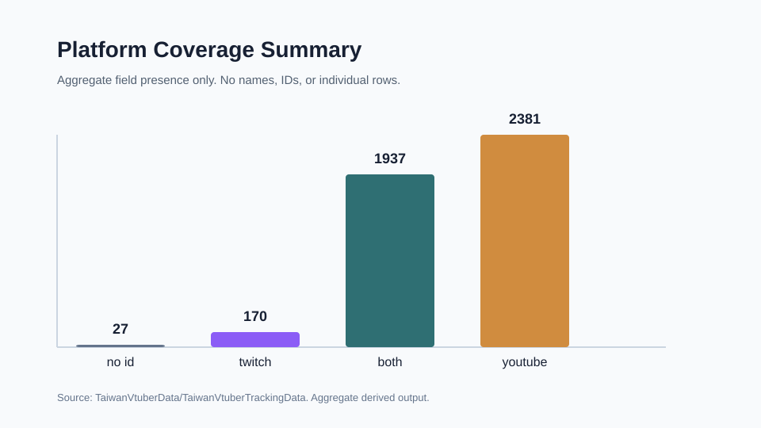
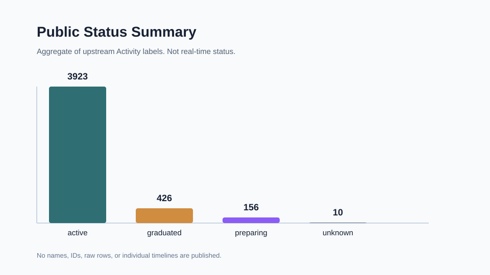
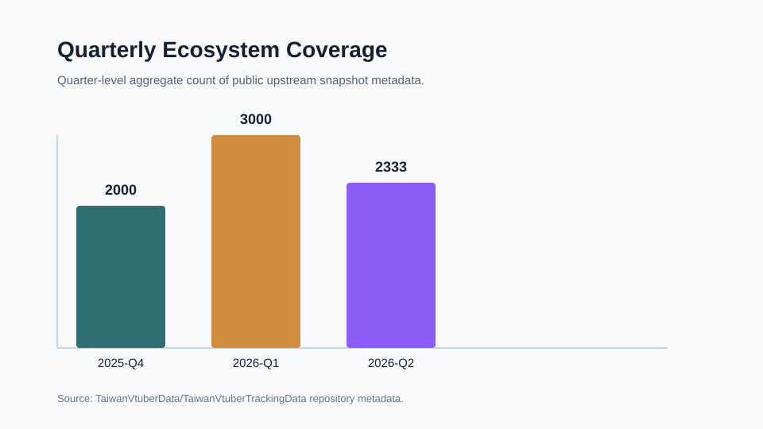
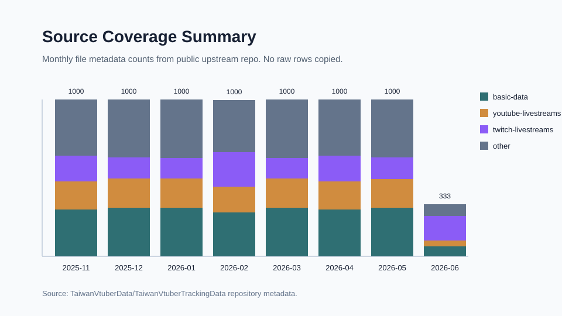

Privacy-conscious aggregate view
Taiwan VTuber Ecosystem
Public, aggregate-only infographics derived from upstream open data. No raw tracking rows, names, IDs, or individual timelines are shown here.
Privacy boundary active
Only derived counts and public source metadata are loaded.
What this view is for
This dashboard explains ecosystem-scale patterns: platform coverage, public status labels, source density, and quarter-level coverage.
- No individual rankings
- No real-time tracking
- No identity speculation
Explore safely
no raw rows
Aggregate trend reader
Platform field coverage
Counts entries by whether upstream public fields include YouTube, Twitch, both, or neither.
Platform mix
real-derived
Platform Coverage

Public labels
not real-time
Status Summary

Quarterly view
metadata
Ecosystem Coverage

Source density
repo metadata
Source Coverage

Calculated from public source metadata.
Quarter-level metadata count, not creator activity.
No names, IDs, raw rows, individual timelines, or rankings are loaded.
Readable takeaways
aggregate interpretation
Industry signals without personal tracking
Derived from public field coverage.
Derived from upstream Activity labels.
Derived from repository metadata.
Public index
Website-ready outputs
| Output | Status | Type | Privacy note |
|---|---|---|---|
| Loading public outputs... | |||